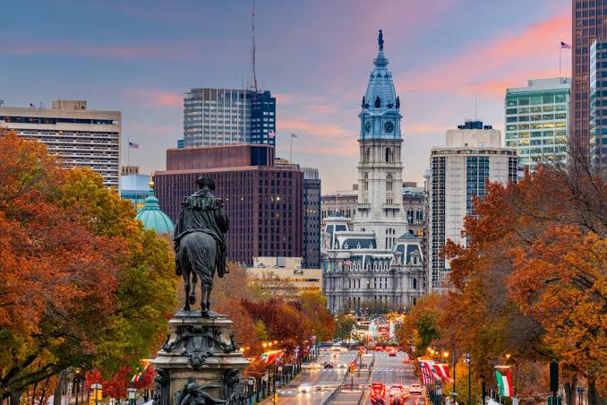

Pennsylvania ist ein Bundesstaat im Osten der Vereinigten Staaten von Amerika und einer ihrer dreizehn Gründerstaaten.
Der offizielle Name ist Commonwealth of Pennsylvania („Gemeinwesen von Pennsylvanien“). Gemeinsam mit New York und New Jersey wird Pennsylvania den Mittelatlantikstaaten
zugerechnet. Der heutige Bundesstaat entstand aus der Province of Pennsylvania, die 1681 von William Penn gegründet worden war. Davor, zwischen 1638 und 1655, gehörte der
südöstliche Teil des Staates zu Neu-Schweden, einer Kolonie des Schwedischen Reiches. Die als Zufluchtsort für religiöse und politische Toleranz gegründete Provinz
Pennsylvania aus der Kolonialzeit war für ihre relativ friedlichen Beziehungen zu den einheimischen Stämmen, ihr innovatives Regierungssystem und ihren religiösen
Pluralismus bekannt.
Quellen- und Lizenzhinweis:
Dieser Text basiert auf dem Wikipedia-Artikel
Pennsylvania
(geänderte Fassung) und steht unter der Lizenz
Creative Commons Attribution-ShareAlike 4.0 International (CC BY-SA 4.0).
Das Bild ist von
USA Tipps